볕 진행 보고
한눈에
- 21시 · 여섯째 묶음 넷째 덩이넷째 덩이를 올렸다(2f62fff9). 진로 고르는 카드마다 «단골 서른 — 가게 끝맺음»처럼 목표가 한 줄 서고, [처음부터 다시]가 진로 단추와 같은 초록에서 회색으로 물러났다. 새 집 짐 풀기 손가락이 새 식물도 짚는다(삽수 → 몬스테라 → 새 식물 → 이삿짐). 투룸에 이삿짐이 하나만 남아도 말풍선이 선다. 눌러서 놓는 길도 놓는 순간 할 일을 센다. 회귀 빨강 둘은 둘 다 게임 고장이 아니었다 — 하나는 바뀐 동작(아래 ㉘), 하나는 느린 판에서 검사가 너무 일찍 읽은 것이다. 검사를 고쳐 다시 쟀다. 돈 · 날 · 하네스 값은 안 바뀌었다. 아래 «넷째 덩이» 사진 넷.
- 20시 · 새 줄 다섯 (D101 · D102)박사님 말씀으로 편의성 UI · 재미 · 장비 · 꾸밈 가구 · 도감 · 업적 다섯 줄을 열었다. plan 이 명세를 다 썼고(plan-ui-fun-20261103.md), growth 가 장비 효과 크기를 하네스로 재고 있다. 짓는 차례와 첫 묶음은 아래 «새 줄 다섯» 절.
- 15시 · 여섯째 묶음 셋째 덩이셋째 덩이를 올렸다(021ba942). 이삿짐 차례 손가락이 [한꺼번에 놓기 (21개)] 바로 옆에서 단추를 짚고, 말풍선이 «빛이 맞는 빈 자리에 바로 놓습니다»를 말한다. 조사가 받침을 센다 — «칼라테아를» · «유리 수경병을» · «몬스테라 1을». 회귀에 «손가락이 화면 밖으로 넘치나» 감시를 새로 켰더니, 첫날 «내 캐릭터를 눌러 보세요» 손가락이 화면 왼쪽 끝 밖으로 나가 있었다(전부터). 그것도 고쳐 같이 올렸다. 돈 · 날 · 결과는 하네스 판 모두 전과 바이트까지 같다. 아래 «여섯째 묶음 셋째 덩이» 사진 넷.
- 12시 · 여섯째 묶음 둘째 덩이여섯을 한 번에 올렸다(9068a4cb). 진열대 칸이 «가구 7번 칸» 대신 «진열대 7번 칸»으로 불린다. 반지하를 나온 뒤 가방의 몬스테라는 «몬스테라»다. 이삿짐 차례에 손가락이 [한꺼번에 놓기]를 짚는다. 돌봄 서른 번째 대사가 두 번 뜨던 것을 고쳤다. 간판 대사가 같은 말을 세 번 하던 것도 고쳤다. plan 의 글 고침 두 덩이(새 종 놓기 글 · 진로 화면 «두고 가는 것» · 알로카시아 겨울잠 글 · 되풀이 상태 줄 등)도 들어갔다. 돈 · 날 · 결과는 하네스 18판 모두 전과 같다. 넓은 회귀 49줄 가운데 빨강 하나는 검사가 옛 이름으로 칸을 찾은 탓이었다. 사진을 보다 이삿짐 손가락이 단추에서 떨어져 보이는 것과 «칼라테아을»(조사)을 찾아 다음 차례에 넣었다. 아래 «여섯째 묶음 둘째 덩이» 사진 넷.
- 10시 · 새 집 첫날 짐 풀기여섯째 묶음 첫 고침(8C4)을 올렸다(7173d8fe). 게임이 권하는 자리(손가락 · 아래글 · 경고 · 가방에서 누를 때 자동 자리)가 이제 한 자로 고른다. «비어 있고 · 손이 닿고 · 놓아도 길을 새로 막지 않는 칸 가운데 가장 밝은 칸»이다. «여기 두면 문 앞 길이 막힙니다»는 놓기 전과 뒤를 견줘, 놓아서 길이 새로 막힐 때만 뜬다. 방에서 고른 삽수 · 새 종에도 [📍 자리] 목록이 열린다. 이삿짐 시루 · 판은 [한꺼번에 놓기] 한 번이면 다 놓인다. 넓은 회귀 46줄이 다 초록이었다. 아래 «새 집 첫날» 사진 셋.
- 07시 · 다섯째 묶음 끝남은 넷을 올렸다(672fa131). 중고 거래 연락이 오면 칩이 [상점]을 말하고 손가락이 [거래하기]를 짚는다. 화분 주문을 기다리는 날은 칩이 «화분이 오는 중 — 2일 뒤»를 말한다. 식물을 크게 보는 화면에서 [다음 날]이 [시야 돌아가기] 줄로 올라가 카드를 안 덮는다. 걸어가는 동안 누른 단추와 방 위에 «🚶 가는 중…»이 뜬다. 회귀 빨강 셋은 또 헤드리스 그림 멈춤이었다. 고치기 전 판을 번갈아 돌려 같은 꼴을 보고, 검사만 굳혔다(782f0660). 아래 «다섯째 묶음 끝» 사진 넷.
- 05시 · 막힘과 엔딩 길 고침비판 여덟째 판이 찾은 막힘(②)과 엔딩으로 들어가는 길(③)을 올렸다. 진로를 안 고른 채 방에 있으면 [다음 날] 자리가 «🏡 진로 고르기 ▸»가 된다(c2211624). 자금이 모인 날은 칩과 손가락이 [할 일] → [내 집 마련하기]를 짚고, 계약하면 시트가 닫혀 엔딩 그림이 가려지지 않는다(b4f983d2). 회귀 빨강 셋은 모두 헤드리스 그림 멈춤 탓으로 갈렸다. 같은 판을 번갈아 돌려 고치기 전 판도 같은 꼴로 빨강이 나는 것을 보고 검사만 고쳤다. 아래 «고친 뒤» 사진 넷.
- 비판 여덟째 판큰 줄기 계획 3단계를 시작했다. 엔딩과 진로를 사람 눈으로 처음 본 판이다. 내 집 계약 → 엔딩 → 진로 셋(가게 40일 · 돌봄 30일 · 육종 30일) → 돌봄 끝맺음 → 진로 바꾸기까지 갔다. 판정은 BLOCK 이고, 막힘 1 · 큰 문제 10 · 작은 문제 15 · 물음 6 이다. 막힘은 진로 화면 [방 둘러보기]를 누르면 옛 원룸에 갇히는 것이다(②). 값이 아니라 core 가 바로 고친다. 이것 하나를 빼면 엔딩과 진로는 끝까지 돈다.
- 좋은 곳엔딩 대사와 그림(«엄마, 아빠. 나 집 생겼어.»), 돌봄의 «자세히 → 자르기 → 나음 → 돌려준다» 손맛, 진로 바꾸기 화면(⑤)을 비판이 좋다고 했다.
- 큰 문제엔딩 그림을 할 일 시트가 덮은 채 시작함(③) · 자금이 모인 날 손가락이 계약 단추를 안 짚음 · 새 집 첫날 자동 자리가 길을 막는 칸을 고름 · 진로 판(주문판 · 맡김판 · 기록장)이 상점 탭 셋째 화면에 묻힘 · 진로 목표와 진척이 안 보임 · 육종은 30일 수입 0 으로 Day 472 에 0원(④). 값이 안 걸린 것은 core 13 · plan 7 줄로 나눴다.
- 다섯째 묶음밤사이 셋을 더 고쳤다. 다시 심기가 아껴 둔 물 줄 체력까지 쓰던 것(ed8c32c5)과, 확인 창 · 손가락이 놓일 자리와 제목을 덮던 것(990b0bda)이다. 심기 말풍선 흐림도 올렸다(1f7f1b8f · 회귀 빨강은 그림 멈춤 탓으로 갈림). 바닥 단추 첫 누름이 안 먹힌다던 것은 다시 일으켜 보니 비판 도구 탓이어서 버렸다.
- 여쭐 것새로 여섯(18~23)이다. 진로 첫 주문 값 · 진로 끝맺음까지의 길이 · 진로 하루 · 초반 벌이 · 기한 넘긴 주문 · 끝맺음 그림이다(맨 아래).
비판 여덟째 판 — 사진으로
판 c19b3233 · 자동 플레이어가 키운 세이브(Day 445 · 원룸 · 5,063,924원)에서 시작했다. 총괄이 사진을 직접 봤다. 누르면 크게 보인다.


고친 뒤 — 사진으로 (05시)
올린 판 b4f983d2 와 같은 코드로 core 회귀가 찍은 폰 화면(390×844)이다. 같은 세이브(Day 445 · 5,063,924원)에서 시작했다. 총괄이 직접 봤다.


다섯째 묶음 끝 — 사진으로 (07시)
올린 판 672fa131 과 같은 코드(game.html 해시 같음)로 core 회귀가 찍은 폰 화면(390×844)이다. 총괄이 직접 봤다.


새 집 첫날 짐 풀기 — 사진으로 (10시)
올린 판 7173d8fe 와 같은 코드(game.html 해시 같음)로 core 회귀가 찍은 폰 화면(390×844)이다. 비판 여덟째 판과 같은 세이브로 투룸 가게 첫날(Day 445)이다. 총괄이 직접 봤다.
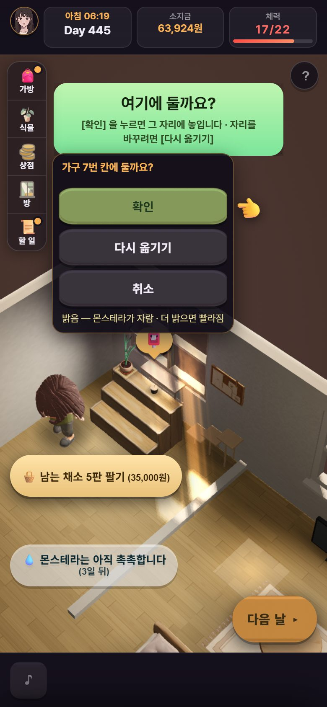
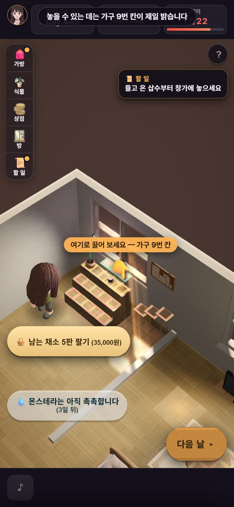
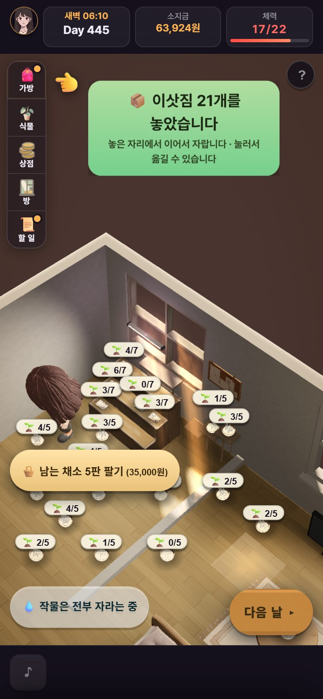
여섯째 묶음 둘째 덩이 — 사진으로 (12시)
올린 판 9068a4cb 와 같은 코드(game.html 해시 같음)로 core 회귀 regs16 이 찍은 폰 화면(390×844)이다. 총괄이 직접 봤다.
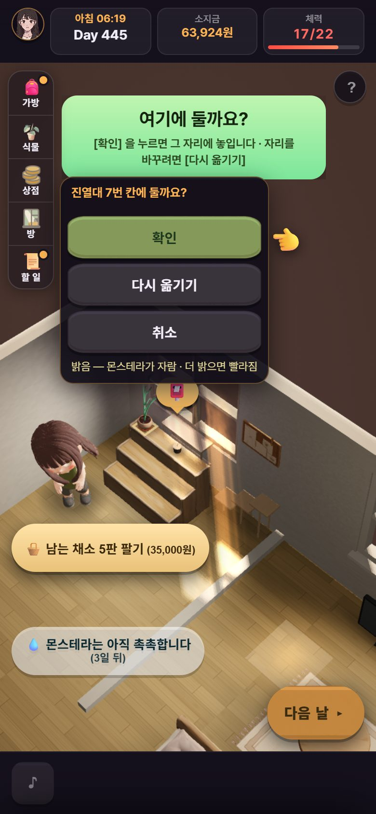
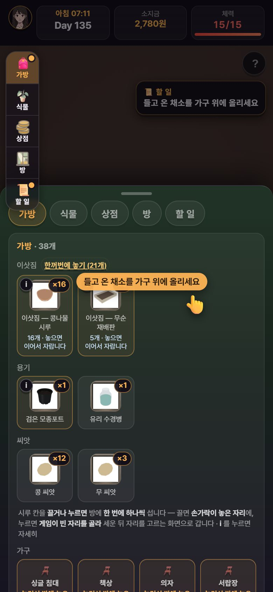
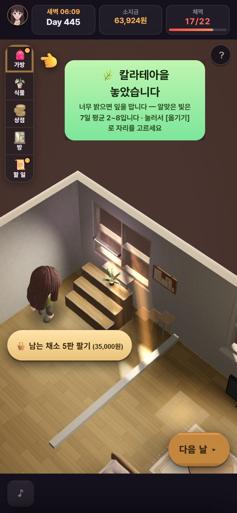
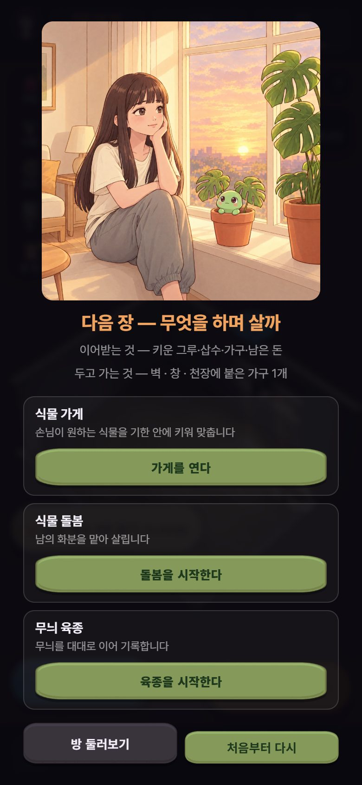
여섯째 묶음 셋째 덩이 — 사진으로 (15시)
올린 판 021ba942 와 같은 코드(game.html 해시 같음)로 core 회귀 regs18 이 찍은 폰 화면(390×844)이다. ㉓만 고치기 전 판(9068a4cb)이다. 총괄이 직접 봤다.
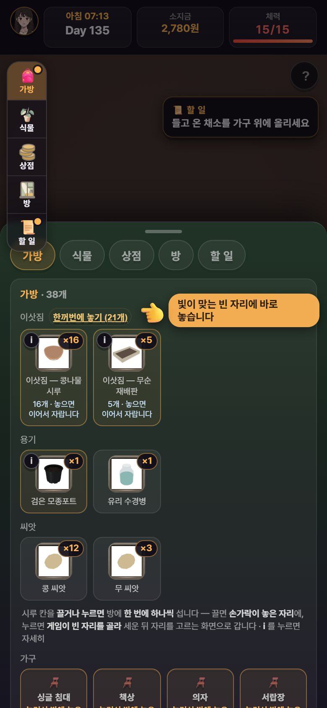
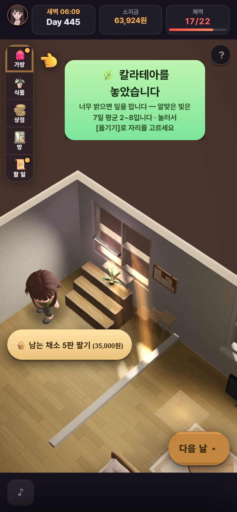
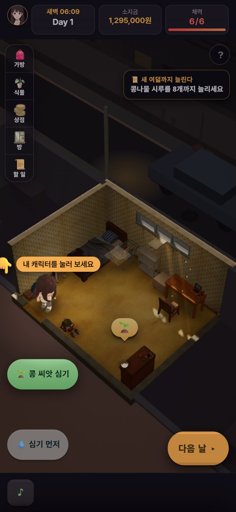
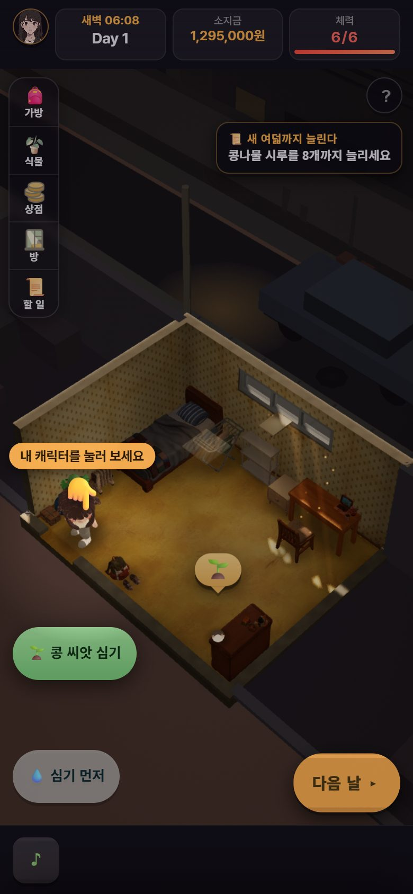
여섯째 묶음 넷째 덩이 — 사진으로 (21시)
올린 판 2f62fff9 와 같은 코드(game.html 해시 같음)로 core 회귀 regs19 · reg55 가 찍은 폰 화면(390×844)이다. 총괄이 직접 봤다.
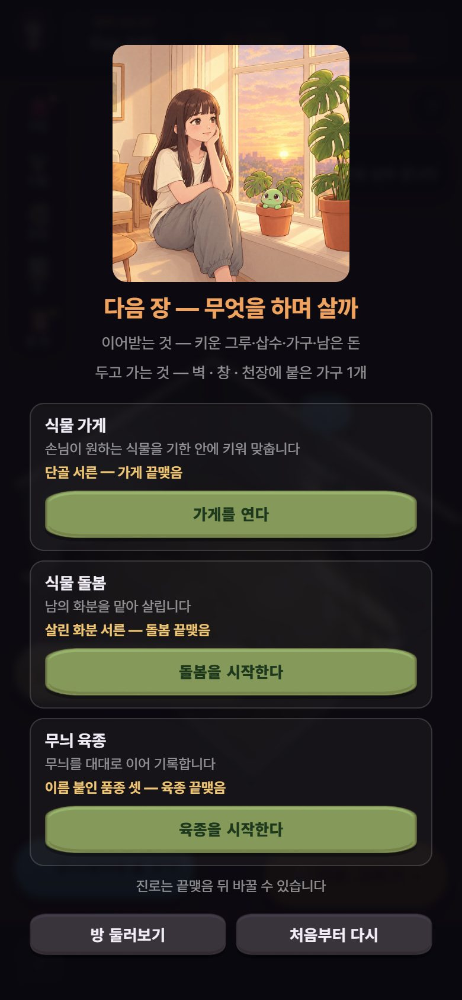
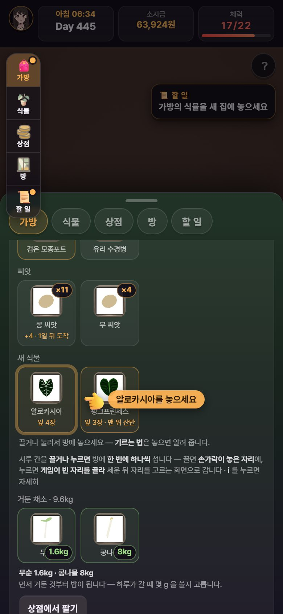
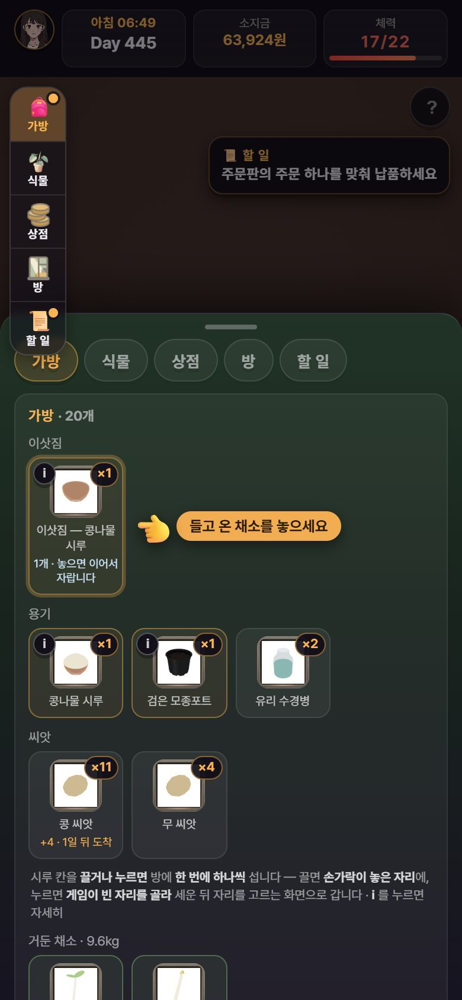
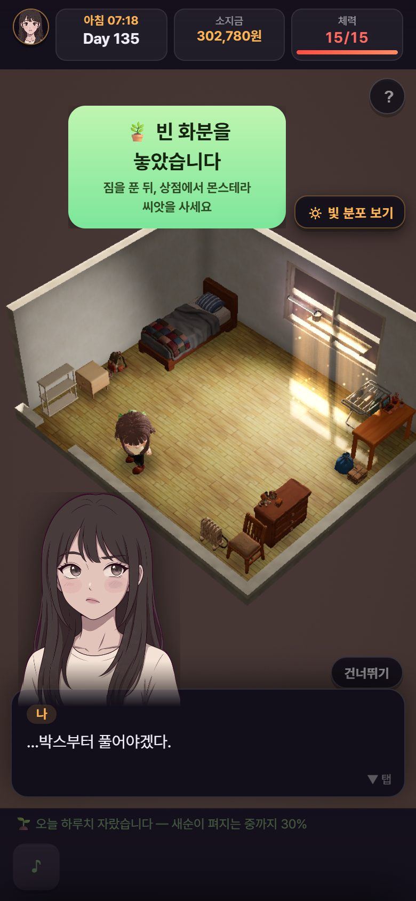
새 줄 다섯 — 편의 · 재미 · 장비 · 꾸밈 · 도감 업적 (D101 · D102)
박사님 11-03 말씀: «편의성 UI 도 지속적으로 개선해 · 재미부분도 니가 기획해서» · «캐릭창 장비 … 효과도 넣고 … 꾸밈용가구도» · «도감 업적 이런부분도 슬슬 확장» · «창의력을 발휘해서 … 추가해» → 총괄 추천 → «좋아 추천대로 진행해». 명세 전부는 plan-ui-fun-20261103.md.
- 재미 첫 묶음 — ① 그루 이름 · 생일(몬스테라 · 삽수에 이름, 이름 붙인 그루는 생일에 몬이가 챙김 · 팔 때 한 줄 더 물음) ② 새 잎 펼치기(무늬 잎이 다 자라는 날 💠 를 눌러 펼침 · 무늬는 빛으로 이미 정해져 있어 뽑기가 아니라 «드러냄» · 안 누르면 다음 날 저절로) ③ 자취 일기(하루 한 줄이 저절로 쌓임 · 반지하에서는 날씨 줄을 안 씀 — 반지하 빛이 «맑음 · 여름» 고정이라 «비가 왔다»가 거짓).
- 편의성 — 비판 1~8판에서 301줄을 모아 열네 묶음으로 나눴다. 먼저: 이삿짐 놓는 동안 «놓는 중… (n/21)» · «나» 창 낡은 줄(이사 뒤에도 «반지하 원룸») · 🔆 빛 보기 단추 · 막힌 누름에 손가락 튐 · 회색 단추 까닭 · 상점 새 것 점 · 씨앗 «n일 치 남음». «놓은 뒤 되돌리기» 단추는 넣지 않는다 — [옮기기] · [가방으로]가 이미 무르는 길인데 안 보였던 것이라 글로 보인다.
- 도감 · 업적 — 업적 열넷(첫 거둠 · 첫 무늬 잎 · 첫 하프문 · 첫 뿌리 · 원룸 이사 · 내 집 등) · 안 찍힌 것은 «?» · 도감은 무늬 잎 19꼴부터(카드 그림 85장은 이미 있음). 첫 묶음은 찍기만, 보상은 그다음.
- 장비 — 원예 도구 · 작업복. 효과 후보: 물 간격 · 물 체력 · 무늬 나는 확률(어미 그루만) · 무늬 등급 · 쌍혹 · 뿌리 날 · 체력 · 자동 거두기(박사님 08-04 «업적 보상으로»). 조건 하나: «중간 밝기 + 장비 < 밝은 자리 맨손» — 장비가 빛을 대신하지 않는다. growth 숫자가 나오면 크기 · 값을 한 장으로 드린다.
- 꾸밈 가구 — 빛 안 가리는 꾸밈 22개는 이미 가구점에 있다. 새 가구는 값이 생기니 미루고, 있는 것에 쓸모를 준다(창가 손님 짝 · 업적 보상). 보상으로 받은 가구는 팔아도 0원(«치우기») — 산 것은 지금처럼 30%.
- 그 뒤 재미 — 창가 손님(꾸밈 가구를 놓으면 고양이 · 참새 · 아이들이 들름) · 볕 사진(빛줄기 드는 때 📷) · 식물 처방 의뢰(이웃 화분을 빛 지도로 고침). 나눔 장터 · 밥상 차림표는 값에 닿아 숫자를 본 뒤 여쭌다.
새로 넣는 것은 하나씩 끌 수 있게 짓는다. 마음에 안 드시면 말씀만 주시면 끈다.
고친 것 · 가른 것 — 목록 (11-02 21시 뒤)
| 무엇 | 어떻게(값 안 바꿈) | 판 |
|---|---|---|
| 다시 심기가 아낀 물 줄 체력까지 씀(7판 #4 보이는 몫) | 남은 체력이 물 줄 몫뿐이면 회색 «(남은 체력은 물 줄 몫 — 💧 먼저)» · 누르면 심지 않고 알림 · 꼬리 수는 이미 물 기다리는 줄까지 셈 | ed8c32c5 |
| 확인 창 · 손가락이 놓일 자리와 제목을 덮음(7판 #6 · #7) | 확인 바가 놓일 자리를 비켜 위 · 아래로 · 손가락도 그 자리를 비킴 · 좁으면 손만 · 등 다는 창 제목 «식물등을»도 다 보임 | 990b0bda |
| 바닥 단추 첫 누름이 안 먹힘(7판 · 6판 #1) | 버림 — 첫 누름은 먹히고 주인공이 걸어가는 5~9초 뒤 체력이 준다. 비판 도구가 3.5초 만에 읽고 또 눌렀다. 다만 걷는 동안 단추가 그대로라 사람도 헷갈릴 수 있어, «가는 중…»을 다는 줄(7C11)을 따로 넣었다 | core 재현 |
| 심기 말풍선이 물 몫을 씀 | 다시 심기가 회색인 동안 거둔 시루 «🌱» 말풍선 · 줄 단추를 흐리게(누르면 그대로 심김 — 낱개는 사람의 고름) · 회귀 빨강은 헤드리스 그림 멈춤 탓(고치기 전 판도 같은 때 빨강) | 1f7f1b8f |
| 막힘 — [방 둘러보기] 뒤 옛 원룸에 갇힘(8판 ②) | 진로를 안 고른 동안 [다음 날] 자리가 «🏡 진로 고르기 ▸» · 누르면 진로 화면 · 할 일 «진로를 골라야 다음 날로 갑니다» | c2211624 |
| 엔딩 그림을 시트가 덮음 · 자금 모인 날 손가락이 딴 데(8판 ③) | 계약하면 열린 창을 닫고 그림부터 · 자금이 모인 날 칩 «자금이 모였습니다 — 내 집을 계약하세요» · 손가락 [할 일] → [내 집 마련하기] · 할 일 창 밑에 깔린 칩은 손가락이 비킬 것에서 뺌(배너 밑 칩은 그대로 비킴) | b4f983d2 |
| 회귀 빨강 둘(손가락이 배너 위 · 확인 창 배너 못 봄) | 검사 탓 — 헤드리스에서 그림이 멈추면 배너가 비키거나 나타나기 전에 잼. 지금 올라간 판과 고친 판을 번갈아 돌려 둘 다 같은 꼴로 갈림. 검사만 고침(다시 잼 · 움직임 끝으로 보냄 · 못 보면 «못 봄» 빨강). 폰에서는 생기지 않는다 | b4f983d2 · 가름 31437a61 |
| 다섯째 묶음 나머지 넷(7판 7C8 ~ 7C11) | 거래 연락 칩 · 손가락 [거래하기](손만) · «화분이 오는 중 — n일 뒤» · 확대 화면에서 [다음 날]을 [시야 돌아가기] 줄로 · 걷는 동안 «🚶 가는 중…». 고치기 전 판에서 새 검사 넷이 먼저 빨강인 것을 봤다. 칩 계산이 둘 늘어 화면이 느려지는지도 쟀다(안 느려짐) | 672fa131 |
| 회귀 빨강 셋(계약 뒤 시트 · 빛 분포 단추 · 상점 손가락) | 검사 탓 — 셋 다 시트가 움직이는 때. 고치기 전 판과 번갈아 돌려 고치기 전 판도 같은 꼴로 빨강(상점 손가락은 네 번 모두 세 너비 가운데 한 너비씩)인 것을 봤다. 검사만 굳힘(움직임 끝으로 보내고 다시 잼 · 몇 번 만에 섰는지 적음 · 끝내 안 서면 빨강). 굳힌 검사는 시트가 안 닫히던 옛 판에서는 여전히 빨강이다 | 782f0660 |
| 새 집 첫날 짐 풀기(8판 큰 문제 · 8C4) | 권하는 칸을 한 자로(빈 · 닿는 · 길을 새로 안 막는 칸 가운데 가장 밝은 칸) · 길 경고는 놓기 전후 견줌 · 방에서 고른 삽수 · 새 종에도 [📍 자리] · 이삿짐 [한꺼번에 놓기 (N개)]. plan 이 고친 글을 되짚다 두 거짓 글과, 6판에 고친 «제일 밝은 칸이 찼을 때» 글이 죽는 것을 잡았다. core 는 원룸 어두운 화분 할 일이 죽는 것을 잡았다. 거짓 글 둘은 고쳤고, 죽던 두 글은 되살린 뒤 검사를 더해 다시 죽으면 빨강이 나게 했다(올라간 판 초록 · 망가뜨린 판 빨강 · 고친 판 초록). 회귀 46줄 초록. 사람이 서는 자리는 안 바꿨다(현관 섬에 세우면 가게 칸에 못 감) | 7173d8fe |
| 여섯째 묶음 둘째 덩이(8C5 · 진열대 · plan §12 · §13 · §14 · 같은 대사 두 번) | 이삿짐 손가락 → [한꺼번에 놓기] · 진열대 칸 이름 · 반지하 뒤 «몬스테라 {n}» · 새 종 놓기 글 · 진로 화면 «두고 가는 것» · 알로카시아 겨울잠 글을 그날 철로 · 되풀이 상태 줄(반지하 그대로 · 나온 뒤 한 번) · 같은 글 짝은 하루 한 번 · 간판 둘째 줄 «있는 간판을 같이 쓰자!». 새 검사는 고치기 전 판에서 빨강을 봤다. 고치기 전에도 초록인 «달자 → 달았다»는 일부러 넓힌 판에서 빨강을 봤다. 진로 고른 날 «많이 컸네!»가 안 서는 것 하나만 빨강을 못 세워 코드 · node 로 닫았다. 화면으로 못 본 다섯(받는 빛 알림 · 무늬 알림 세 갈래 · 분갈이 · 빈 판 · 간판 한 자리 판)은 코드와 node 로만 봤다 → 끝 걸음 · 비판 9 · 10판 볼 거리 | 9068a4cb |
| 회귀 빨강 하나(이삿짐 옮긴 뒤 몬스테라 [📍 자리]) | 검사 탓 — 검사가 가방 칸을 옛 이름 «축복받은»으로 찾아 못 집었다. 그 그루 표지로 찾게 하고, 칸이 없으면 그 자리에서 «칸 없음» 빨강으로 끝나게 했다. 고친 판 · 고치기 전 판 둘 다 초록 | 9068a4cb |
| 여섯째 묶음 셋째 덩이(8C5 꼬리 · 조사 · plan §15) | 이삿짐 손가락이 단추 옆에 선다 · 말풍선 «빛이 맞는 빈 자리에 바로 놓습니다» · 조사 셈을 한 곳으로(숫자 끝도 셈) · 삽수 분갈이 기록 «⚠ ⚠» → «⚠» · «[옮기기]로» 한 줄 · 첫날 캐릭터 손가락(㉓ → ㉔). 새 검사는 다 고치기 전 판에서 빨강을 봤다. 회귀 51줄에 «손가락 화면 밖 넘침» 감시를 켰다 — 넘침 0, 감시가 화면 검사 41개 모두에서 돌았다(잰 횟수 9,390). 하네스 판은 고치기 전 · 뒤가 바이트까지 같다 | 021ba942 |
| 회귀 빨강 하나(확인 창 배너) | 컴퓨터가 버벅인 탓 — 그 검사가 평소 130초에서 557초로 늘었고 바로 뒤 검사도 늘었다. 배너는 6초에 걷히는데 재는 때가 늦었다. 그 하나만 다시 돌려 129초 · 초록. «재는 순간»을 한 번만 찍어 늦으면 흔들리는 검사라, 다음 덩이에서 «섰다 · 걷혔다» 기록으로 판정하게 고친다 | 021ba942 |
| 빈 주문판의 오늘 · 내일 날씨 | 어긋나는 날 없음 — 가게 주문판이 비었을 때 오늘 날씨로 보는 곳과 내일 날씨로 보는 곳이 있어 하루 엇갈릴 수 있는지 셌다. 하네스 12판 가게 날 965일 가운데 판이 빈 날 564일, 둘이 갈린 날 0일. 고치지 않는다 | — |
| 여섯째 묶음 넷째 덩이(8C6 · 짐 풀기 갈림 B · C · 새 식물 · 누름 길) | 진로 카드 목표 줄 · [처음부터 다시] 회색 · 투룸 이삿짐 하나 말풍선 · 산 집 첫날 끝까지 안내 · 새 식물 손가락 · 누름 길도 놓는 순간 할 일을 셈(㉕ ~ ㉘). 새 검사는 다 고치기 전 판에서 빨강을 봤다. 넓은 회귀 53줄 · 손가락 화면 밖 넘침 0(검사 43개 모두에서 돎 · 잰 횟수 8,610) | 2f62fff9 |
| 회귀 빨강 둘 | 둘 다 게임 고장 아님 — ① 빈 화분을 누른 순간 할 일 대사가 서서 손가락이 쉼(바뀐 동작이 맞음 · 검사가 대사를 닫고 재게) ② 이삿짐 21개를 놓는 데 느린 판에서 4~7초가 걸리는데 검사가 2.5초에 읽음(두 번 돌려 놓인 자리 21개가 같음 · 검사가 «다 놓았습니다» 기록을 기다리게 · 가짜로 멈춘 판에서 빨강 확인) | 2f62fff9 |
| [다음 날] 막힘(투룸) | 고친다 — 반지하 첫 플레이 때만 서야 할 «가방의 시루를 먼저 방 안에 놓아 주세요»가 투룸 Day 445 에서도 빨간 «안 됐습니다»로 섰다(사진 봄). 이사 뒤에는 안 서게 한다 · 반지하는 그대로 | 다음 덩이 |
| 새 식물이 어두운 자리에 섬(투룸 가게 방) | 진열대 탓이 아님 — 진열대를 옮겨도 밝은 칸은 셋이고, 삽수 · 몬스테라가 먼저 쓴다. 배치는 그대로 두고 새 식물 확인 바가 «어두움 → [옮기기] · 식물등»을 보이게 한다 | 다음 덩이 |
| 진로 판 팔기 9,400원 | 막는다 — 팔아도 진로는 안 깨지지만, 벽 자리가 비고 «팔기 → 진로 바꾸기(새 판 공짜) → 팔기»로 돈이 생긴다. 진로 판 셋은 붙박이처럼 [팔기]를 안 낸다 | 다음 덩이 |
| 이삿짐 놓는 동안 칸 누름 | 고친다 — 그 틈에 이삿짐 칸을 누르면 «가방에 빈 시루가 없습니다»(틀린 말)가 선다. «놓는 중… (n/21)» · «이삿짐을 놓는 중입니다»로 | 다음 덩이 |
| 총괄 끝 걸음 목록 | 다섯째 · 여섯째 묶음 검사 23 · 사진 8 을 더함 — 묶음이 다 들어간 뒤 한 번에 걷는다. 11-03 밤 더함: 짐 풀기 할 일이 이사 순간이 아니라 첫 그루를 놓을 때 열림(㉘) · 오래 돌린 판 화면 메모리(검사 크롬이 2.7GB 까지 큼 · 폰 튕김과 닿는지 조용한 기계에서 날마다 잼) | c3783ac7 |
| 비판 여덟째 판 가름 | core 8C1 ~ 8C13 · plan 8P1 ~ 8P7 · 박사님 물음 18 ~ 23 · 도구 탓 일곱 버림 | 가름 문서 |
총괄이 정한 것(D95 안 · 값 아님)
- 눌러서 놓는 길도 놓는 순간 할 일을 센다: 끌어서 놓는 길과 같게 맞췄다. 그래서 이사 첫날 빈 화분을 누르면 그 순간 짐 풀기 대사가 선다(㉘). 짐 풀기 셈과 손가락 글은 전과 같다.
- 느린 판에서 너무 일찍 읽은 검사는 «기다리게» 고친다: 다시 돌려 초록이 나오길 바라지 않고, 같은 판을 두 번 돌려 결과(놓인 자리 21개)가 같은지부터 봤다. 같았고, 다른 것은 끝나는 때뿐이라 검사가 «다 놓았습니다» 기록을 기다리게 했다.
- 보상으로 받은 가구는 0원: 받은 그 한 개에만 표시를 단다. 가구점에서 산 같은 가구는 지금처럼 30%에 팔린다. 있는 값은 안 바뀐다.
- 회귀 한 줄은 다시 재서 갈음했다: 51줄 가운데 확인 창 배너 하나가 컴퓨터가 버벅인 때 빨강이었다. 고친 것(첫날 캐릭터 손가락)은 그 배너 길을 안 지나고, 바로 앞 회귀에서 같은 검사가 초록이었다. 그래서 넓은 회귀 전체를 다시 돌리지 않고 그 하나만 다시 돌려, 초록이고 평소 빠르기로 돌아온 것을 보고 올렸다.
- 같은 대사 두 번은 «같은 글»일 때만 거른다: 돌봄 서른 번째를 돌려주면 이정표 대사와 할 일 끝 대사가 글자까지 같은데 둘 다 섰다. 처음 안은 «짝이 오늘 섰으면 나중 것을 뺀다»였다. 그러면 가게에서 «간판을 달자!»만 남고 «간판을 달았다.»가 빠진다. 그래서 글이 같거나 순서가 거꾸로일 때만 거르고, «달자 → 달았다»처럼 이어지는 말은 둘 다 둔다.
- 되풀이 상태 줄은 반지하 그대로: plan 은 «반지하는 120일 안에 끝난다»고 보고 상태 줄을 판 전체에 한 번으로 줄이려 했다. 하네스 18판을 보니 이사는 135~240일이고, 반지하에서 두 번 서는 판이 있었다. 반지하에서는 그대로 두고 나온 뒤에만 한 번으로 갈랐다(plan 문서도 바로잡음).
- 360 폭 배너가 4줄: 새 종 놓기 글이 360 폭에서 4줄이다. 고치기 전 글도 4줄이고 새 글이 줄을 늘리지 않아 그대로 둔다. 배너 상자가 화면 절반 남짓만 쓰는 것은 끝 걸음 때 사람 눈으로 본다.
- 반지하를 나온 뒤 가방의 몬스테라 이름: 이사하면 화분이 다 가방으로 와서, 잎 열 장 넘는 모주가 «축복받은 몬스테라 삽수»로 불렸다. 가방의 진짜 «삽수» 칸과 낱말이 겹친다. 반지하에서는 박사님이 지으신 이름 그대로 두고, 반지하를 나온 뒤에는 «몬스테라 {n}»(다른 화면이 이미 부르는 이름)으로 부르게 했다. 9068a4cb 에 들어갔다. 원하시면 되돌린다.
- 알로카시아 겨울잠 맡김이 가을에도 열림: 가을에 연 맡김은 잠 철이 아니라 밝은 데 두면 7일에 깬다. 그런데 몬의 말은 «겨울엔 자는 거야. 버리지 말고 봄을 기다려.»였다. 글을 그날 철로 가르게 했다(겨울 밖 막힘 «죽은 거 아니야. 밝은 데 두면 깨.»). 겨울에만 열리게 하는 길(데이터)은 돌봄 진로 가을 일감 수가 바뀌어 손대지 않았다. 원하시면 그쪽으로 바꾼다.
- 3단계를 박사님 답 전에 시작: 큰 줄기 계획대로, 2단계 값 답을 기다리는 동안 엔딩 · 진로를 사람 눈으로 먼저 봤다. 덕분에 막힘을 박사님이 만나시기 전에 찾았다.
- 막힘이 먼저: core 는 지금 하던 고침 하나를 마치면 [방 둘러보기] 갇힘부터 고친다. 그다음 엔딩으로 들어가는 길(시트 · 손가락), 남은 다섯째 묶음, 나머지 순이다.
- 진로 카드에 목표와 «끝맺음 뒤 바꿀 수 있음»: 이미 있는 규칙(D75)을 화면에 보이는 것이라 넣는다. 끝맺음까지 날수(몇 년)는 사람마다 달라 쓰지 않는다. 그 길이 자체는 여쭌다(19번).
- 기한 넘긴 주문은 알림만: 말없이 사라지던 것에 아침 알림 한 줄을 단다. 손님 반응 · 벌은 값이라 여쭌다(22번).
- 심기 말풍선은 흐리게만: 한 화면이 두 말을 하지 않게 흐리지만, 사람이 골라 누르는 것은 막지 않는다.
- 검사 흔들림은 검사만 고친다: 배너가 손가락을 비키는 것은 화면을 그릴 때마다 도는 고리에서 일어난다. 폰에서는 늘 돌아 문제가 없다. 게임 쪽에서 바로 비키게 하는 안은 후보로만 두고, 같은 꼴 흔들림이 또 나오면 그때 넣는다.
- 상점 손가락이 늦게 뜨는가: 네 번 모두 «세 너비 가운데 꼭 하나»만 꺼진 꼴이 고르게 보여, 게임이 처음 상점을 열 때 손가락을 늦게 띄우는지 의심했다. 굳힌 검사로 세 번(열여덟 칸) 재니 다 첫 잼에 섰다. 헤드리스에서 시트 움직임이 멈춘 탓으로 보고 따로 고치지 않는다. 박사님 폰 판에서 다시 본다.
- 엔딩 그림이 나타날 때 방 선이 비침: 사진으로 2.5초 뒤에는 안 보이는 것을 봤다. 방에서 그림으로 겹쳐 바뀌는 연출로 보고 고치지 않는다.
다음
- core:
심기 말풍선 흐림→[방 둘러보기] 갇힘(8C1)→엔딩으로 들어가는 길(8C2 · 8C3)→남은 다섯째 묶음(7C8 ~ 7C11 · 672fa131)→새 집 첫날 짐 풀기(8C4 · 7173d8fe)→둘째 덩이(8C5 · 진열대 · plan 글 · 같은 대사 두 번 · 간판 글 · 9068a4cb)→셋째 덩이(이삿짐 손가락 · 조사 · 첫날 캐릭터 손가락 · 021ba942)→넷째 덩이(8C6 · 짐 풀기 · 새 식물 · 2f62fff9)→ 지금 새 식물 덩이(확인 바 빛 줄 · 칼라테아 배너 · [다음 날] 막힘 · 이삿짐 «놓는 중…» · 진로 판 · «나» 창 · 거짓 경고 하나) → 그루 이름 · 생일 → 빛 보기 단추 · 막힌 누름 → 새 잎 펼치기 → 자취 일기 → 작은 편의 셋 → 도감 · 업적 → 장비(growth 숫자 뒤) — 사이사이 여섯째 묶음 나머지(8C7 ~ 8C13) → 8C14. plan: 2f62fff9 대조. - growth: 장비 효과 일곱의 크기를 하네스로 잼(이사 · 내 집 · 엔딩이 며칠 당겨지나 · 판을 깨나). 숫자가 나오면 총괄이 크기를 골라 한 장으로 드린다.
- 묶음이 들어가면 plan 대조 → 총괄 끝 걸음 → 비판 아홉째 판(1막 재확인) · 열째 판(엔딩 · 진로 재확인).
- 그 뒤 박사님 폰 판(큰 줄기 계획 갈림목 A) — 덫과 막힘이 빠진 판으로.
박사님이 정하실 것 — 새로 일곱
전체는 master-to-doctor-20261101.md 맨 아래 «11-03 보탬». 말씀이 없으면 값은 그대로 두고 진행한다.
- 가게 첫 주문을 받은 그루로 바로 맞춘다 — 가게를 연 둘째 날 1,365,000원(집값의 27%)이 들어온다. «키워 맞추는» 맛보다 «받은 것 넘기기»가 먼저다. 값 · 차례가 뜻하신 것인가.
- 진로 끝맺음까지의 길이 — 돌봄 «살린 화분 서른»은 진로 277일이다. 하네스로 가게 Day 1009 · 육종 Day 654 다. 엔딩 뒤 반년~1년 반이다.
- 진로 하루가 시루 반복 — 진로 일은 띄엄띄엄이고(가게 40일에 주문 5건) 체력이 남는다. 15번(Day 31~90 반복)과 같은 뿌리다.
- 돌봄 · 육종 초반 수입 0 — 육종은 Day 472 에 0원. 진로마다 초반 벌이를 둘까(값).
- 기한 넘긴 주문 · 맡김 — 알림은 넣는다. 손님 반응 · 벌을 둘까.
- 진로 끝맺음에 그림 — 엔딩은 그림 둘, 끝맺음은 카드 한 장이다. 새 그림은 크레딧이 든다. 총괄 추천: 진로를 한 번 해 보신 뒤 정한다.
- 투룸 3단 선반 9칸에 손이 안 닿는다 — 진열대가 앞을 막는다. 진열대를 옆으로 옮기면 선반에 닿고 윗칸이 더 밝아지지만(4.1 대 2.7 ~ 3.1), 옮긴 진열대 칸이 0.25 ~ 0.71 로 어두워져 가게 진로 판값이 바뀐다. 총괄 추천: 지금은 그대로(새 식물 어두움은 확인 바로 보임) · 투룸 배치 손질은 집 창(house)이 다시 열릴 때 선반을 닿는 자리로 옮기는 안을 잰다.
앞서 여쭌 1~17 과 큰 줄기 계획 갈림목 A~D 도 그대로 기다린다. 급한 것은 2번(1막 기다리는 길의 속도)이다.
자세한 기록: 비판 여덟째 판 playtest-critic8-20261102.md · 가름 master-critic8-triage-20261103.md · plan 미리 훑기 plan-critic8-prescan-20261102.md · 캠페인 master-campaign-20261007.md